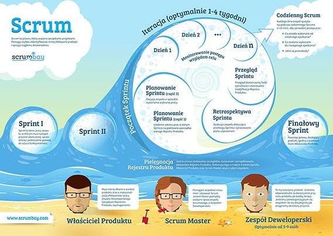

Śladami faraonów
Pragmatyczna podróż
po piramidzie testów
Quality Excites - 2014 © License:
CC BY-ND 3.0 PL
Testy oprogramowania
Kto? Co? Jak?
Tester?


Waterfall

Agile
Agile vs Waterfall
- Łatwość wprowadzania zmian
- Szybka adaptacja
- Większa kontrola nad ryzykiem
- Szybciej dostarczamy wartość
- Dostarczony produkt jest bliższy oczekiwaniom
Zespół Agile

Rola i oczekiwania wobec testera
- Każdy dba o jakość
- Testowanie jest ciągłe
- Testowanie nie wstrzymuje dostarczenia produktu
- Tester jest odpowiedzialny za zgłaszanie feedbacku
- Testy opisują oczekiwania i wymagania
- Brak czasu na ręczne testy regresji
Kiedy zacząć testowanie?
Jak najwcześniej...
Tylko co testować?
Pracujemy w Agile
Pracujemy z klientem

UCD & Agile

Co dostarcza UCD?
Informację, do czego system ma służyć
Persony, czyli informacje kim są użytkownicy
Informację o umiejętnościach użytkowników
Persona
- Zdjęcie
- Opis - wiek, zawód, krótkie wprowadzenie
- Potrzeby
- Cele
- Czego nie lubi?
Korzyści posiadania persony
- Użytkownik staje się namacalny
- Odwołujemy się do konkretnej osoby
- Nie mówimy użytkownik
- Wykorzystujemy je do tworzenia user stories
User Story
- Technika opisywania wymagań
- Krótkie historyjki opisujące akcje do wykonania w systemie
- Zrozumiałe dla zespołu i dla klientów
- Ważne są cele użytkownika, nie właściwości systemu
Konstrukcja user story
- Jako → persona
- Chcę → wykonać akcję - ale nie rozwiązanie!
- Żeby → osiągnąć coś ważnego dla mnie
Wymagania vs user story
- Produkt powinien być biały
- Produkt powinien być podłączony do prądu
- Produkt powinien opiekać z góry i z dołu

Wymagania vs user story
Jako Kamila,
Chcę zjeść tosta z serem w środku,
Żeby zaspokoić głód

Persona
Krystian Kocur

- DANE: Krystian Kocur
- ZAWÓD: Prezes firmy
- WIEK: 42 lata
- ADRES: Gliwice
- WYKSZTAŁCENIE:
Studia magisterskie - Chemia -
ŻYCIE OSOBISTE:
- Żonaty
- Dwoje dzieci (11 i 14 lat)
- Uwielbia swoją daczę na mazurach
- Uzależniony od telefonu komórkowego i GPS
- HOBBY: Tenis, Film, Podróże
- MOTTO:
Czas to pieniądz.
-
NIE LUBI:
- Bezsensownych spotkań
- Nieplanowanych wizyt w sklepie
- Telefonów od żony z przypomnieniem co ma kupić
-
CECHY / OTOCZENIE:
- Zabiegany
- Nowoczesny
- Konkretny
- Wszystko planuje
-
OCZEKIWANIA:
- Pomocna dłoń w codziennych obowiązkach.
- Łatwość zapisywania zadań.
Zawsze pod ręką
.- Wsparcie w organizacji.
Nasz klient to bogaty, zmanierowany prezes firmy farmaceutycznej, który chce robić efektywnie zakupy.
Ma niestety problemy z pamięcią. Zawsze zapomina co ma kupić, lecytyna nie pomaga. Pomóc w zapamiętywaniu ma prosta aplikacja webowa.
Dzięki niej nie będzie musiał z pustymi rękami wracać do domu, gdzie czeka na niego wściekła żona.
Zbieramy wymagania!
Rozmowa z product ownerem
Zadanie 1
Użytkownik może się zalogować na własne konto
Jako Krystian,
Chcę się zalogować do aplikacji,
Żeby zobaczyć swoje listy zadań
Zadanie 2
Lista zamknięta jest niedostępna dla użytkownika
Jako Krystian,
Chcę aby moje zamknięte listy nie były widoczne,
Żeby nie wprowadzały mnie w błąd
Zadanie 3
Lista jest zamknięta kiedy wszystkie jej elementy są zrobione
Jako Krystian,
Chcę zamknąć wszystkie elementy znajdujące się na liście,
Żeby lista została automatycznie zamknięta i nie wprowadzała mnie w błąd
Przerwa
Język Domenowy
Kto? Co? Kiedy?
Przykład
- Zadanie zrobione / Zadanie zamknięte
- Zadanie nie zrobione / Zadanie otwarte
- Zamknięta lista
- Otwarta lista
Podział testów
- Testy czarno-skrzynkowe
- Testy biało-skrzynkowe
Black Box Testing

BBT - przykład
Test funkcjonalności (end to end):
przesłanie wiadomości od jednego użytkownika do drugiego.
- Loguję się jako użytkownik X.
- Naciskam przycisk wyślij wiadomość.
- Wybieram z menu rozwijanego użytkownika Y.
- Wpisuję treść wiadomości.
- Naciskam przycisk wyślij.
- Wylogowuję się.
- Loguję się jako użytkownik Y.
- Naciskam na przycisk Nowe wiadomości.
- W liście powiadomień szukam wiadomości od X.
- Naciskam na najnowszą wiadomość.
- Wiadomość zawiera treść, którą wysłał użytkownik X.
White Box Testing

WBT - przykład
- Istnieją obiekty acc1 i acc2 typu BankAccount.
- Inicjalizuję obiekt acc1 = BankAccount.withBalance(200).
- Inicjalizuję obiekt acc2 = BankAccount.withBalance(10).
- Dokonuję wywołania acc1.transfer(acc2, 50).
- Oczekuję, iż acc2.balance() == 60.
- Oczekuję, iż acc1.balance() == 150.
Piramida testów
So, you see, while Agile does promote people and interactions over tools, it doesn't suggest that tools should be eliminated.
The right tools in the right hands make us stronger - much like how apes learned to use twigs to ferret out termites from their nests, we must also learn to wield tools to ferret out bugs from our nests of code.
Acceptance tests
Dlaczego od środka?
Acceptance tests
Acceptance tests
Testy akceptacyjne
- Testy integracyjne.
- Testy funkcjonalne.
- Testy regresyjne.
- Testy domeny i logiki.
BDD
BDD
- Sposób zapisu
- Mocno zorientowany na Agile
- Story BDD
- Spec BDD
Story BDD
Opis funkcjonalności i logiki biznesowej z punktu widzenia dostarczonej wartości dla klienta.
To właśnie jeden ze sposobów opisu szczegółów technicznych w języku domenowym, zrozumiałym nawet dla nietechnicznego klienta.
Story BDD - Formaty
-
Connextra
AS A ... jako kto I WANT ... wykonać cel SO THAT ... osiągnąć korzyść
-
Feature Injection
IN ORDER TO ... osiągnąć korzyść AS A ... jako kto I WANT ... czynność / cel
-
Given/When/Then
-
GIVEN ... warunki początkowe WHEN ... wykonując czynności THEN ... weryfikacja
-
Spec BDD
Niskopoziomowy opis implementacji konkretnego fragmentu.
TDD 2.0
Zadanie
Przerwa
Unit tests
Testy jednostkowe
Unit tests
Testy jednostkowe
- Podstawowa warstwa testów
- Dostarcza najszybciej informację zwrotną
- Typ testów biało-skrzynkowych
- Zawiera detale implementacyjne
- Unit to jednostka funkcjonalna
- Najlepszy stosunek: KOSZT / ZYSK
TDD

Zadanie
Automated GUI tests
Testy automatyczne GUI
Automated GUI tests
Testy automatyczne GUI
- Zautomatyzowane scenariusze testowe.
- Nie za dobry stosunek: KOSZT / ZYSK
- Głównie testy eksploracyjne.
GUI - Test Runner

GUI - Page Object

- Odzwierciedlenie strony w kodzie
- Relacja dziedziczenia
- Klasa bazowa - ogół
- Klasa pochodna - szczegół
GUI - Selektory
<div class="container">
<label><input id="option" type="checkbox" /> Opcja</label>
<input type="submit" value="Submit" />
</div>
-
CSS
#optiondiv.containerinput[type='submit']
-
XPath
/div/label/input/*[contains(text(), 'Opcja')]/div/../div/preceding-sibling::input
Zadanie
Specification By Example
Acceptance Test-Driven Development
- Podejście łączące BDD i wymagania czytelne dla klienta
- Wykonywalna specyfikacja uruchamiająca kod
- Wiele warstw testów współgrających ze sobą
Executable Specification
Fitnesse

Korzyści płynące z automatyzacji
- Agile stawia na automatyzację.
- Możliwość przetestowania wielu zestawów danych.
- Minimalizacja żmudnej pracy.
- Szybka informacja zwrotna (GO / NOT GO).
Utrzymanie testów
- Testy czarno-skrzynkowe się łatwo pisze ...
- ... i ciężko utrzymuje.
- Testy biało-skrzynkowe pisze się gorzej ...
- ... i jeśli są źle napisane, utrzymuje się je równie źle.
Dziękujemy za uwagę!
Linki dla ciekawskich:
- Licencja prezentacji
- Specification by Example
- Succeeding with Agile
- Selenium
- Fitnesse
- Cucumber
- Capybara
- RSpec
{kind=link}
{kind=link}
{kind=link}
{kind=link}
{kind=link}
{kind=link}
{kind=link}
{kind=link}
{kind=link}
{kind=link}
{kind=link}
{kind=link}